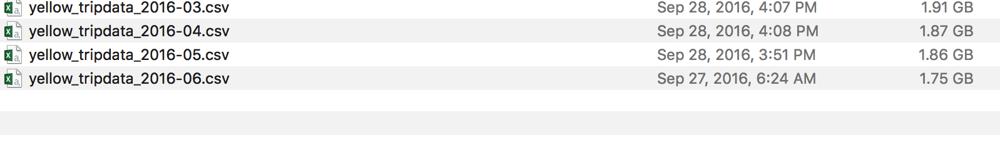

The goal of this post is to explore dask dataframe on high level rather than analysis.
Pandas is an in-memory python library for quick data munging, preparation, and analysis. Pandas is my go-to library until the data size fits in the memory.
I was looking for an out of core python library which can handle large datasets. Dask seems to fit in. However Pandas API is huge. All the methods in Pandas are not available in Dask.
Dask basically provides alternative parallel versions of numpy & pandas dataframes where computations are performed whenever required using task scheduling.(Direct Acyclic Graphs. Graphs are defined as a dictionary of tasks)
Dask uses blocked algorithms which breaks a large dataset into many small chunks.
Main parts of dask are:
- dask.array: dask.array is like numpy array.
- dask.dataframe: dask.dataframe is like pandas dataframe which can process large volumes of csv files.
- dask.bag: We can use dask bag for semi structure files like JSON blobs or log files.
The tasks/computations that we define are called task graph which are executed by the Dask Schedulers in parallel. Dask is built on top of tornadoweb making it asynchronous.
With the help of single machine scheduler, we can use single machine/laptop to process gigabytes of data using disk instead of RAM.
In a distributed scheduler, there are three components:
- Client(s)/User(s),
- Worker(s),
- Scheduler.
Ascynchronous communication happens between the Scheduler and the Client. When the client/user submits the graph, the Scheduler coordinates b/w the Client and the worker(s) to do the work. Multiple users can operate on a single scheduler at a time.
In this post, we will focus only on dask dataframes.
Dask breaks dataframes into multiple pandas dataframes, so a single dask dataframe is a logical collection of multiple pandas dataframes.
We will use New York City taxi trip data to explore the power of dask.
I downloaded 6 Giga Bytes worth of data using this github repo. Thanks to Todd who maintains this github repo.

There are several GB's of taxi data available for download. However, due to bandwidth limitations, I was able to download few GB's.
If I load 6 GB worth of data using Pandas, Pandas throws this beautiful "MemoryError" which is actually frustating.
So, lets do it with Dask Dataframe. Dask Dataframe looks almost similar to Pandas.
Import Dask dataframe and read all the data
import dask.dataframe as dd
newyork_trips = dd.read_csv('yellow_tripdata*.csv')
Print first 5 rows of the data
newyork_trips.head()
VendorID tpep_pickup_datetime
0 1 2016-03-01 00:00:00
1 1 2016-03-01 00:00:00
2 2 2016-03-01 00:00:00
3 2 2016-03-01 00:00:00
4 2 2016-03-01 00:00:00
Note: I am not showing all the variables in the above output.
Lazy Computation (or) Computations using Direct Acyclic Graph
Lazy computation is the term frequently used in the case of Apache Spark. Similar to Apache Spark, Dask uses Direct Acyclic Graph to perform computations only when they required.
total_passenger_count = newyork_trips['passenger_count'].sum()
In the above calculation, nothing is actually computed. This is stored in the dask graph. When we call compute() method, this is computed.
total_passenger_computed = total_passenger_count.compute()
print("Total Passenger Count is: ", total_passenger_computed)
Total Passenger Count is: 78198268.0
The operations in Dask are parellizable. It doesn't support all the methods available in Pandas API yet.
Filtering the dataframe
trip_dist_min10 = newyork_trips[newyork_trips['trip_distance'] < 10].compute()
Groupby
newyork_trips.groupby('tpep_pickup_datetime')['passenger_count'].sum().head()
Now comes the good part:
- Dask dataframe to pandas dataframe
- Pandas dataframe to dask dataframe
Dask Dataframe to Pandas Dataframe
When we use compute() method, dask dataframe is converted to pandas dataframe
pandas_df = newyork_trips[newyork_trips['trip_distance'] < 5].compute()
print("Type of dataframe is: ", type(pandas_df))
pandas.core.frame.DataFrame
Pandas Dataframe to Dask Dataframe
dd.from_pandas(pandas_df, npartitions=2)
Complete list of available operations are listed here
References:
- http://matthewrocklin.com/slides/dask-scipy-2016.html
- https://www.youtube.com/watch?v=PAGjm4BMKlk
- https://www.continuum.io/blog/developer-blog/dask-institutions
- https://github.com/dask/dask/issues/1122